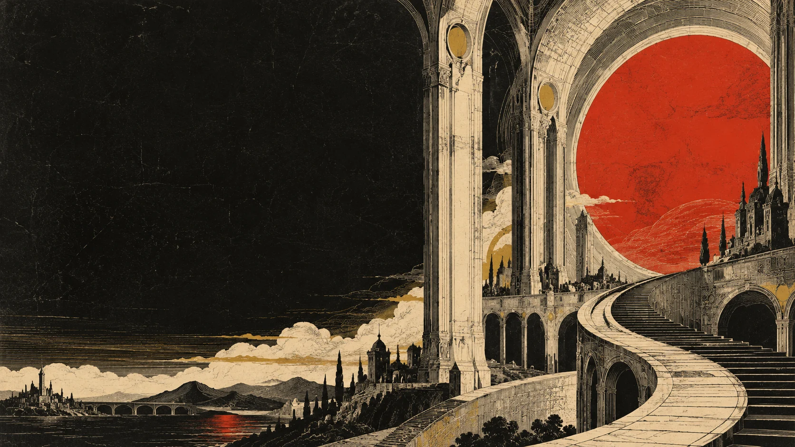
Chapter one / The spark
It starts with one spark. You reach towards a flicker. In this imagined world, one small idea is enough to open a door to something you have yet to discover.
Follow the spark
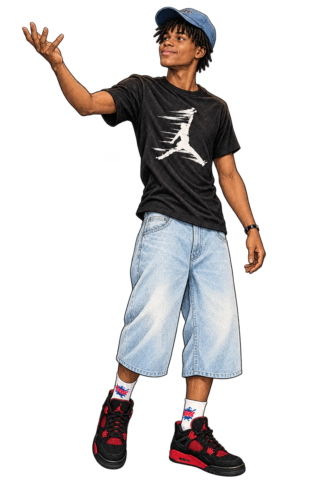
A WORLD OF POSSIBILITY Every new world begins somewhere.
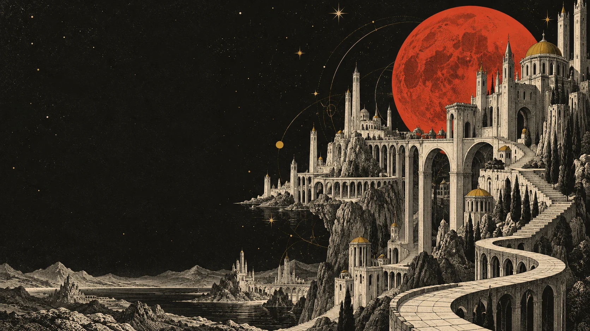
Chapter two / The dream
Let the idea wander. Beyond the doorway, possibilities stretch into a new city. You follow the paper bird towards a horizon still taking shape, curious about what lies ahead.
Find its shape
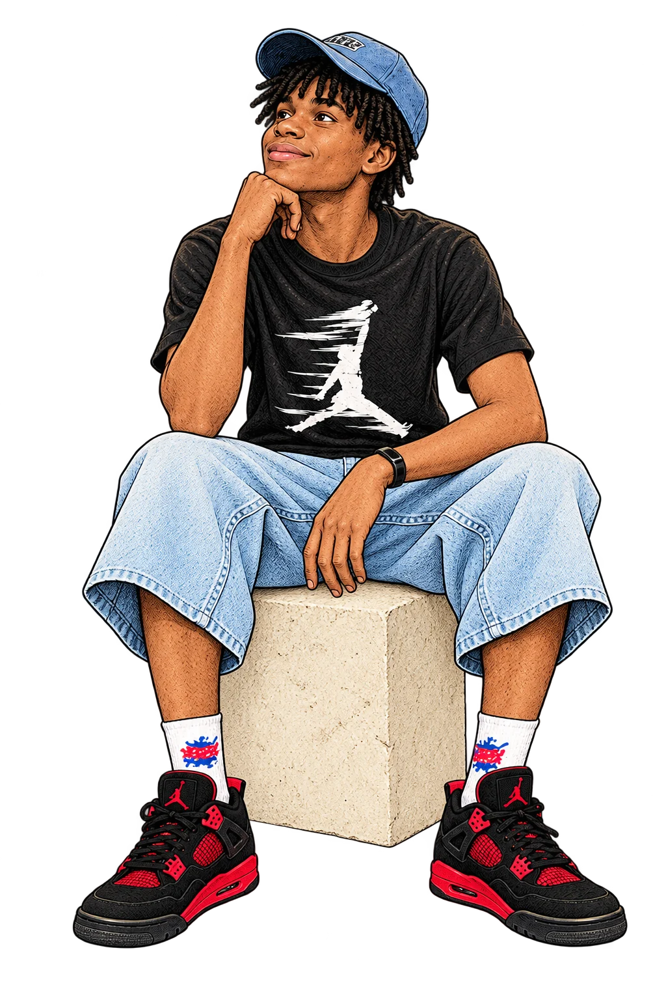
A little curiosity.
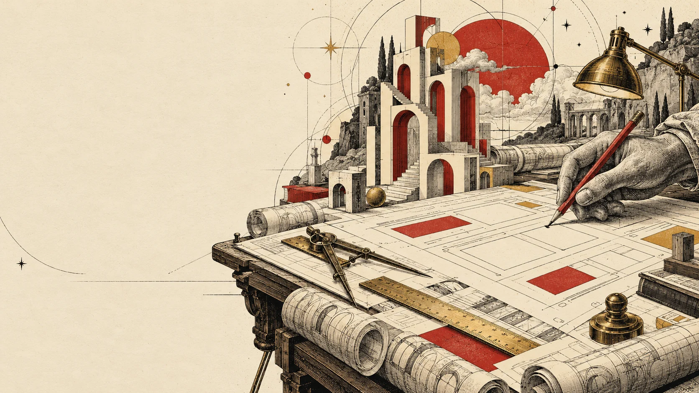
Chapter three / The blueprint
Give the dream its shape. You set pencil to paper. Paths become sketches, and scattered thoughts begin to fit together. A clearer direction emerges, one considered line at a time.
Explore the design
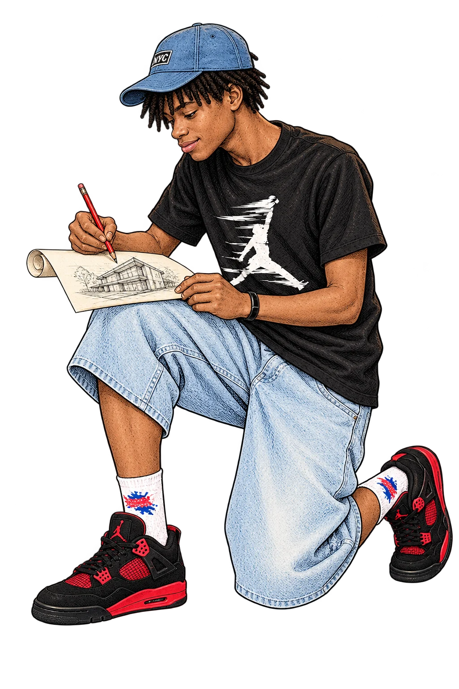
A thought becomes a line.
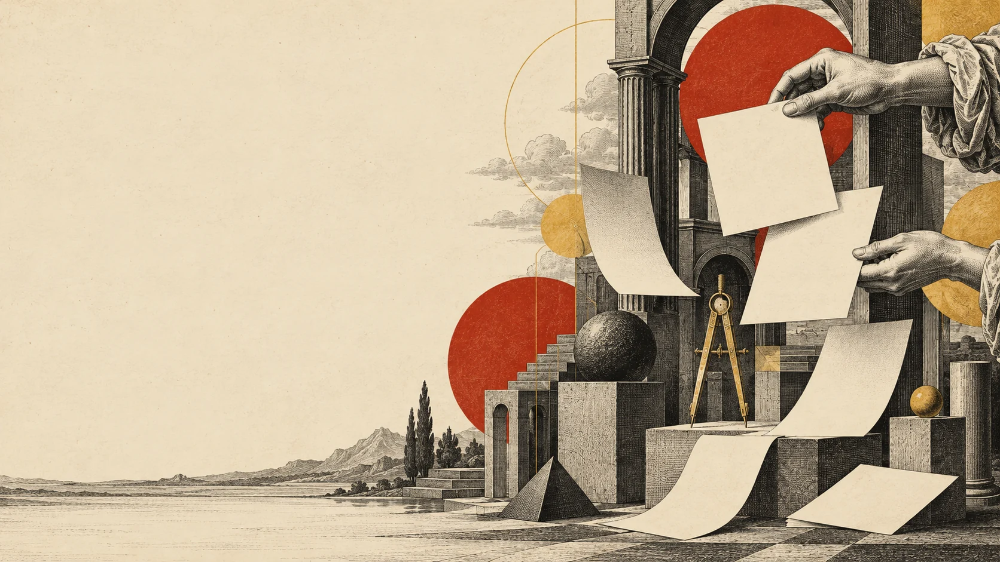
Chapter four / The design
Make it feel like you. Colour, type and rhythm find their place. You look for the details that give this world its own character, until the pieces begin to feel connected.
Enter the workshop
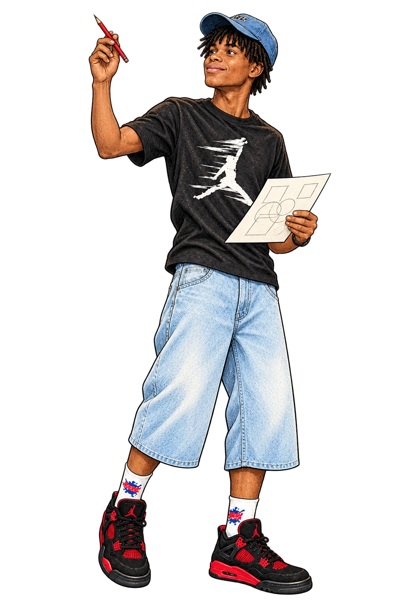
The details give it character.
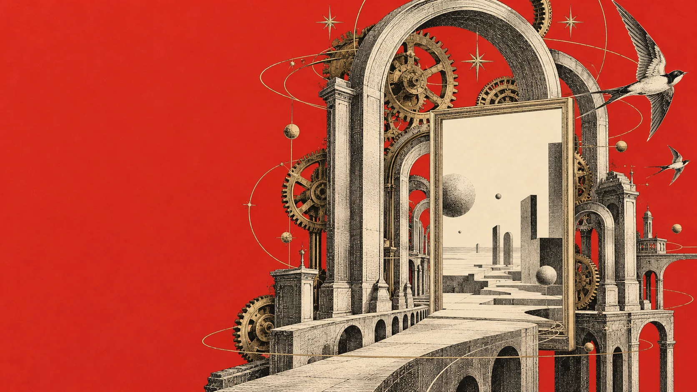
Chapter five / The craft
Bring the pieces together. Inside the workshop, you build one thoughtful detail at a time. The drawing becomes a doorway, and your next step brings the imagined world closer.
Take it with you
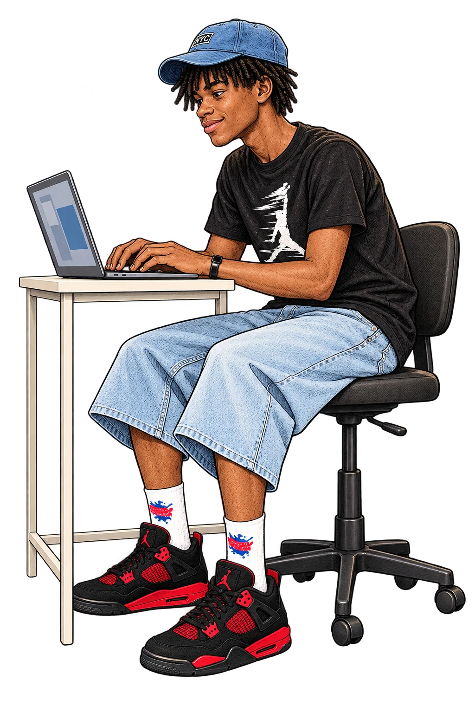
MADE WITH INTENT
Made with intent.
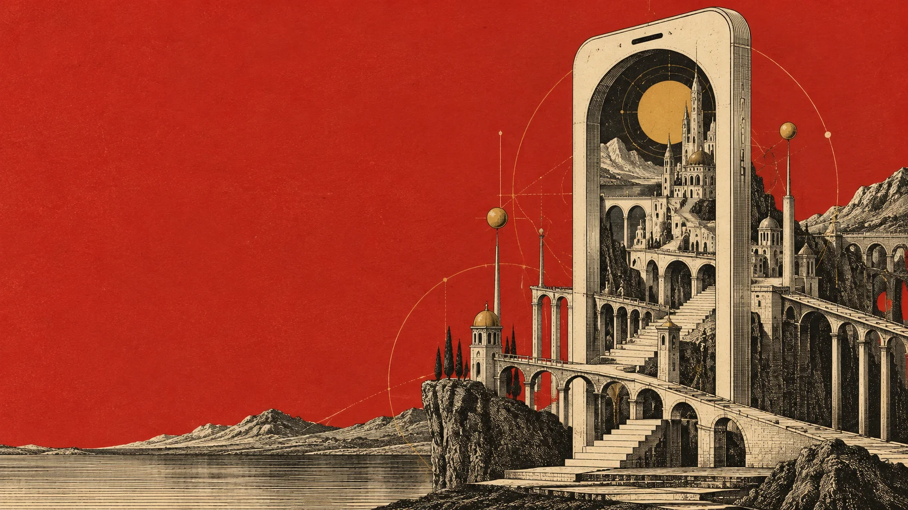
Chapter six / A world in your hand
A world in your hand. The journey becomes small enough to carry. You hold a glowing screen: the same imagined world, seen from a new angle and ready to explore.
See it unfold
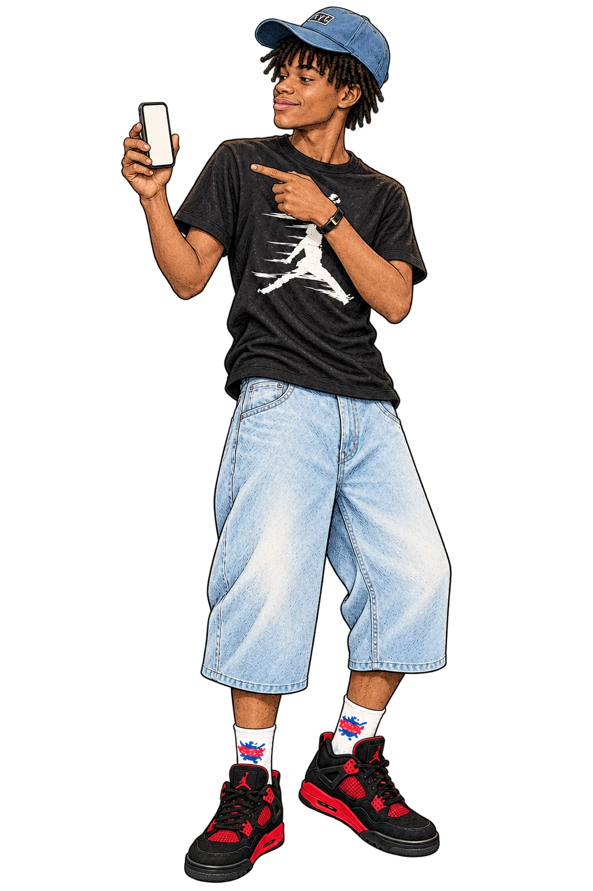
A different view.
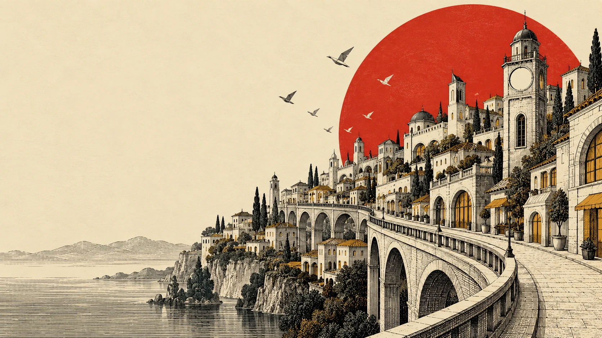
Chapter seven / The launch
Open the door to possibility. You step beyond the workshop. The city lights up, and the paper bird carries the spark into open sky. A new part of the journey begins.
Follow the horizon
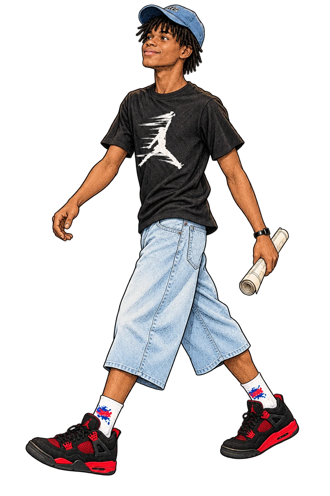
An open door.
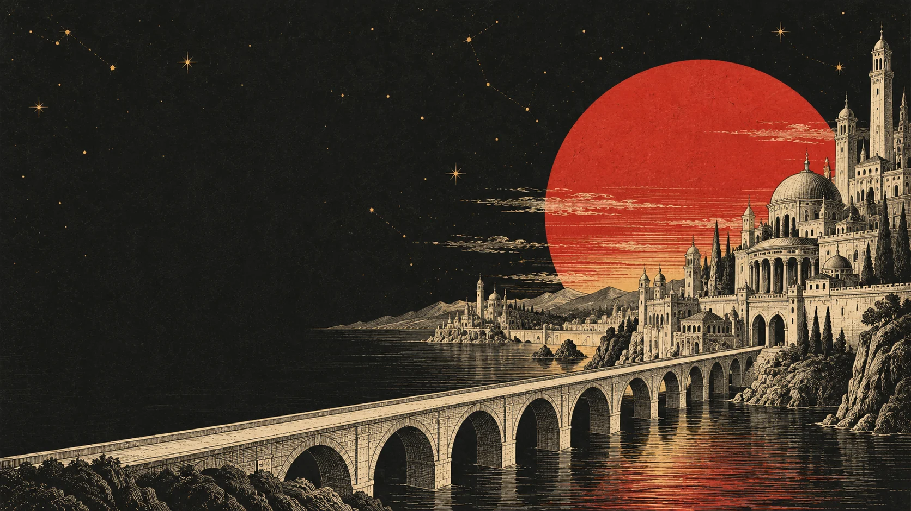
Chapter eight / The horizon
Your next chapter starts here. You pause at the horizon. Another spark appears: an invitation to imagine what comes next. There is room for a new idea, and a new beginning.
Tell us your idea
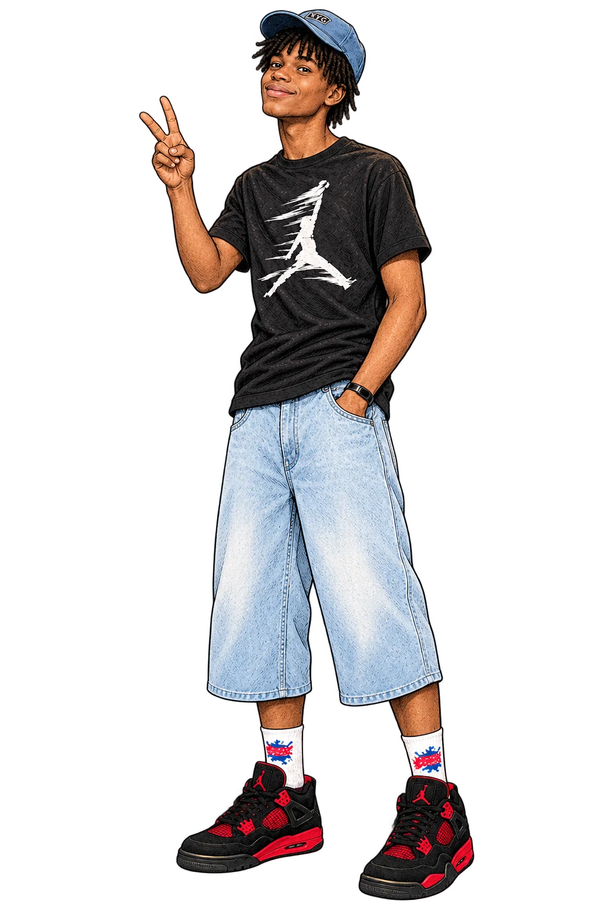
What could your next chapter be?